Юнион — cистема автоматизации подбора персонала
В кейсе рассказываю, как мы подошли к глобальному редизайну продукта: зачем он понадобился, какие этапы прошли и какие решения приняли. Отдельно разбираю версионность макетов, организацию новой дизайн-системы и то, как это помогло команде работать быстрее и согласованнее.
ps это короткая выжимка из всей работы, которая была проделана мной и аналитиками
Основные проблемы
- Интерфейс выглядел устаревшим и уступал конкурентам на HRTech-рынке.
- Пользователям было сложнее ориентироваться в системе из-за разного дизайна в модулях.
- Одни и те же действия в разных разделах работали и выглядели по-разному.
- Из-за несогласованности интерфейса пользователи чаще ошибались и давали негативный фидбек.
- Разработка новых экранов занимала больше времени из-за отсутствия единых UI-паттернов.
Цель
Обновить интерфейс и привести модули к единой дизайн-системе, чтобы улучшить пользовательский опыт, усилить продукт на пресейлах и ускорить разработку новых экранов.
Исследования
Перед началом редизайна я изучил текущий интерфейс, пользовательский фидбек и основные сценарии работы в системе, чтобы понять, где именно продукт теряет в удобстве и восприятии. Отдельно сравнил Юнион (ex TalentForce) с прямыми конкурентами на HRTech-рынке, чтобы определить, какие UX/UI-паттерны уже стали стандартом для систем подбора персонала.
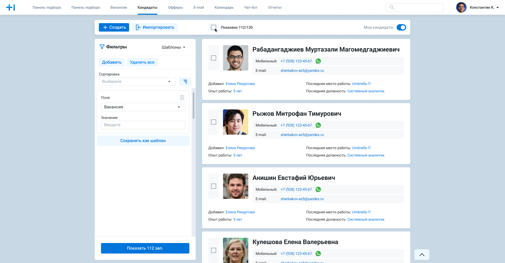
Основные проблемы, которые выявились после всех исследований по списку кандидатов.
Пространство используется неэффективно: карточки занимают много места, но показывают мало полезной информации для принятия решения.
Сложно быстро оценить кандидата: в карточке не видно статуса, этапа воронки, релевантности вакансии, последней активности или следующего действия.
Нет четкой визуальной иерархии: имя кандидата, контакты, опыт, место работы и служебная информация конкурируют между собой за внимание.
Визуальный стиль выглядит устаревшим: большое количество границ, заливок и мелких элементов снижает ощущение современного и зрелого продукта.
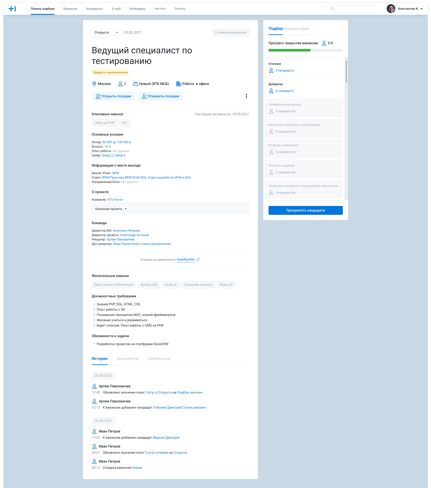
По итогам исследования я собрал презентацию с выявленными UX/UI-проблемами, примерами из текущего интерфейса и предложениями по улучшению ключевых сценариев. В ней были зафиксированы основные зоны роста продукта, аргументы в пользу редизайна и первичный план изменений, который я представил руководству продукта для согласования дальнейшей работы.
По ссылке полная презентация с различными экранами в новой дизайн-системе
Открыть в FigmaПроцесс
После презентации результатов исследования и согласования направления с руководством продукта я начал подготовку дизайн-системы для будущего редизайна. На этом этапе был собран единый шаблон для компонентов, определены базовые правила их описания и подготовлены ключевые артефакты: структура библиотеки, принципы именования, состояния компонентов, сетка, типографика, лендинг клиентов для вакансий, цвета и базовые UI-паттерны.
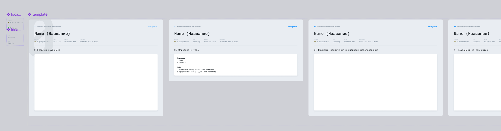
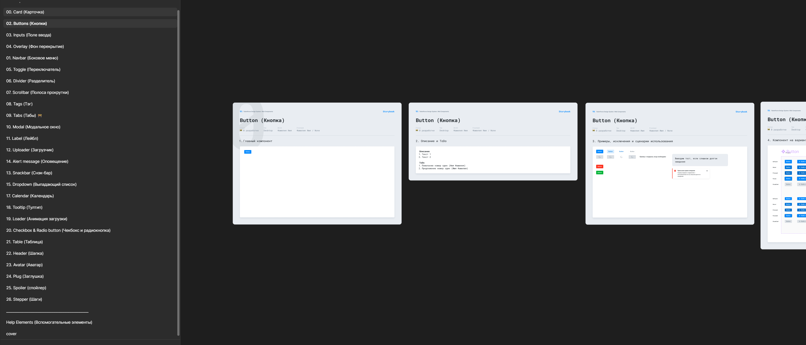
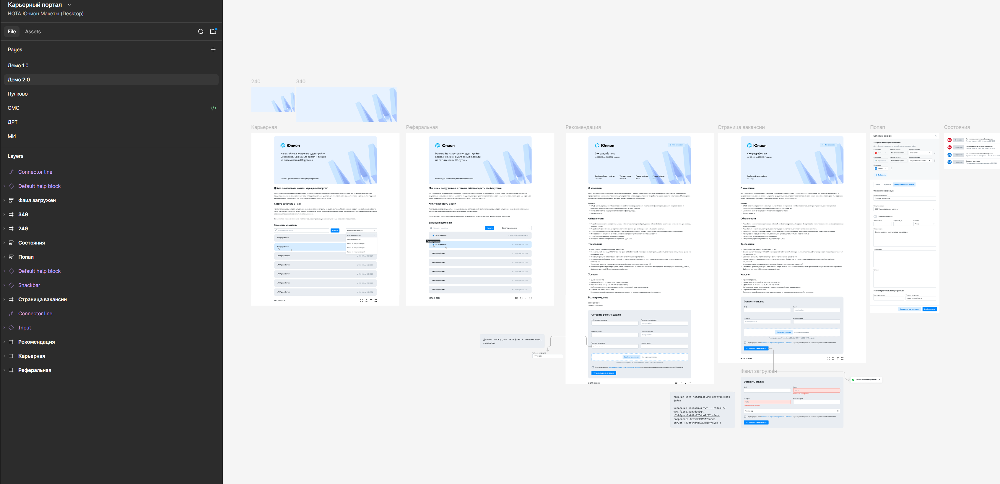
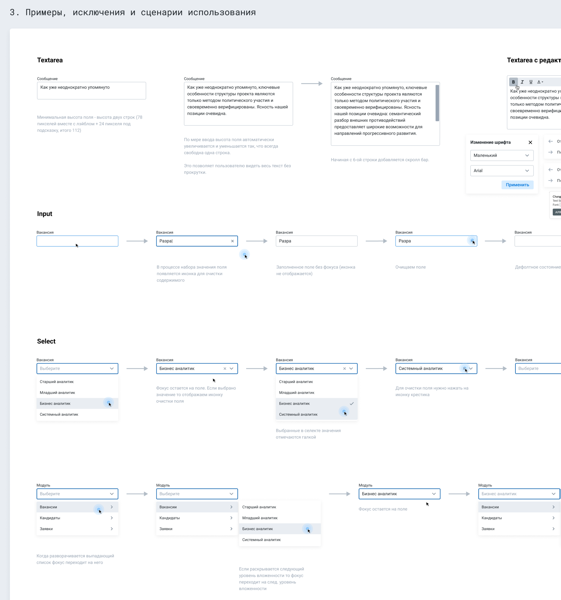
После сборки базовой дизайн-системы мы перешли к редизайну старых модулей системы. Для MVP-версии выбрали ключевые сценарии, которые чаще всего используются рекрутерами: список кандидатов, карточку кандидата, работу с вакансиями, фильтрацию, статусы и основные действия по воронке подбора. Чтобы снизить риски, изменения решили обкатывать не сразу на всех пользователях, а на заранее сформированной фокус-группе из активных пользователей продукта — на их обратной связи мы проверяли новые UX-паттерны, удобство интерфейса и готовность решений к масштабированию на остальные модули.
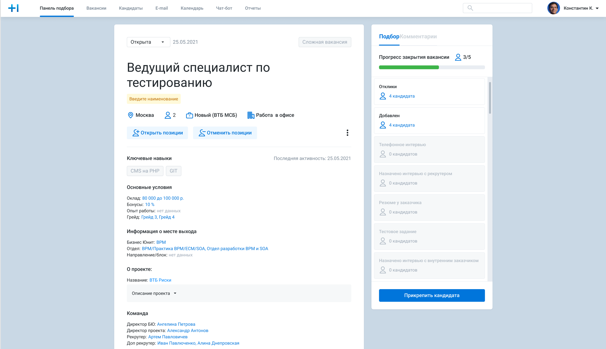
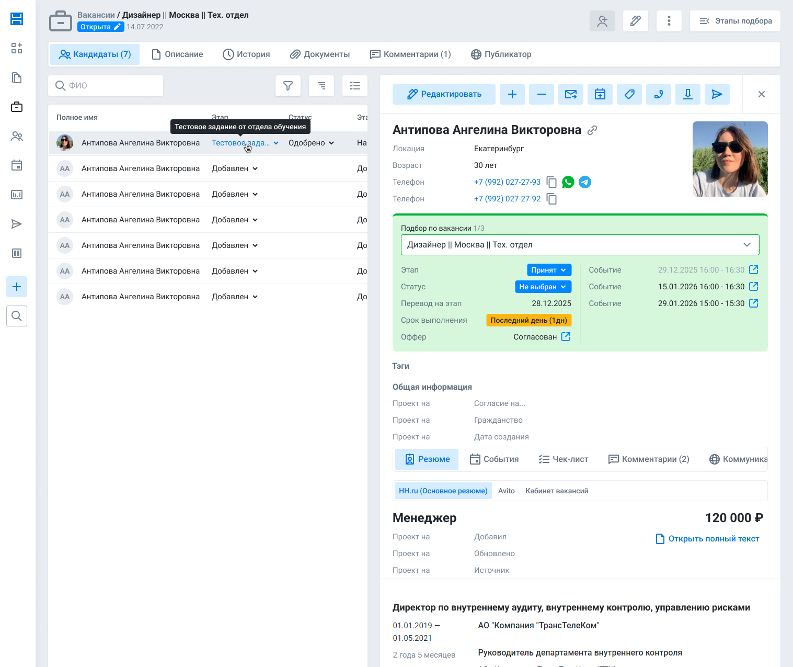
При редизайне мы пересмотрели структуру ключевых модулей и полностью отказались от отдельной Панели подбора, так как ее функции логичнее было встроить в карточку вакансии. В обновленной карточке вакансии основной фокус сместился на прикрепленных кандидатов: рекрутер мог сразу видеть, кто находится в работе по конкретной вакансии, на каком этапе подбора кандидат находится и какие действия требуют внимания. Дополнительно появился новый блок «Подбор по вакансии», который собирал всю необходимую информацию о кандидате именно в контексте выбранной вакансии и помогал быстрее принимать решения без переходов между разными разделами.
Все компоненты из Figma были перенесены на новый фронтенд-стек и собраны в единую UI-библиотеку. Каждый компонент прошел проверку через Storybook: мы оттестировали состояния (помогали тестировщики), варианты использования и поведение, чтобы обеспечить консистентность интерфейса в продукте и ускорить дальнейшую разработку.
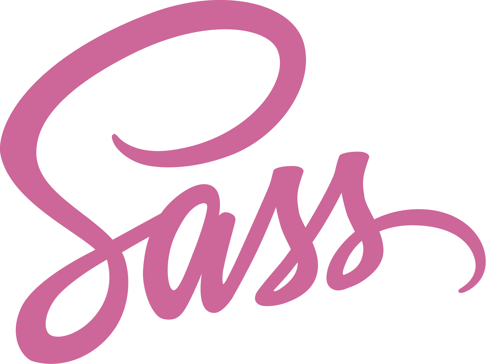
После вывода основных модулей на фокус-группу работа не закончилась: мы продолжили собирать обратную связь, отслеживать проблемные места и дорабатывать интерфейс. Часть изменений была точечной — правки состояний, подписей, отступов, поведения компонентов и отдельных сценариев. Но были и более крупные доработки: уточнение логики модулей, переработка отдельных блоков и адаптация решений под реальные рабочие процессы пользователей.
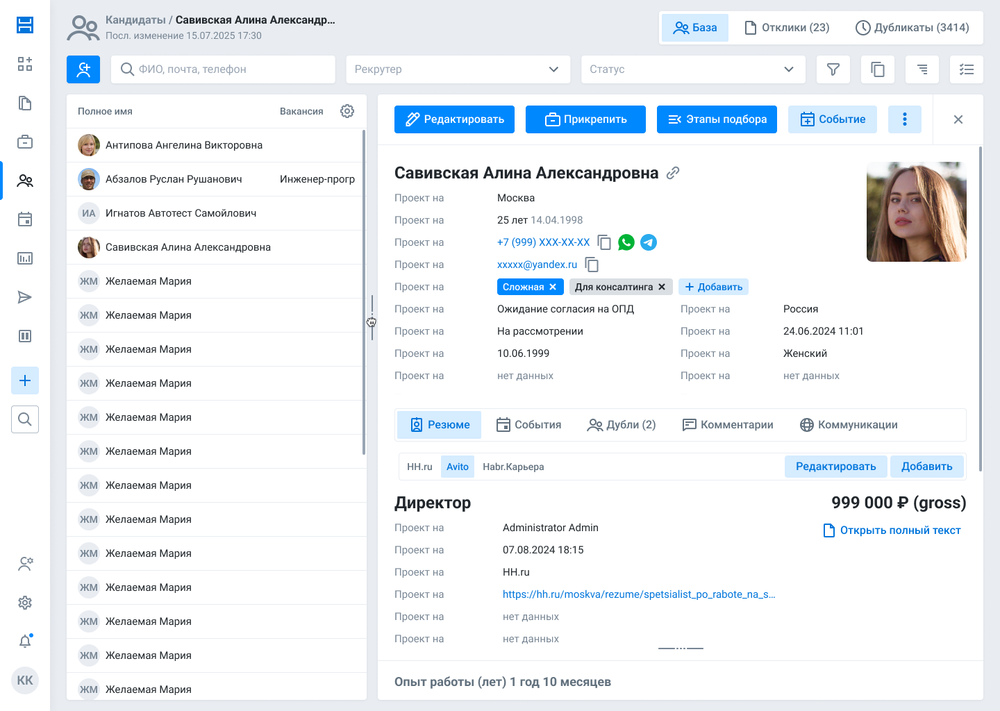
Результаты
Время прохождения основных сценариев 0%
Сократили время выполнения ключевых сценариев за счёт упрощения структуры модулей, обновления карточек вакансии и кандидата, а также удаления отдельного модуля «Панель подбора» и переноса его функционала.
Time-to-market 0%-0%
Команда стала быстрее проходить путь от постановки задачи до релиза благодаря дизайн-системе и готовым Vue-компонентам.
Важно отметить, что этот результат стал возможен не только благодаря моей работе, но и благодаря совместной работе всей команды: продуктовой, дизайн- и frontend-команды.
Также были сделаны версии мобильных компонентов и MVP с минимальным набором функционала для рекрутеров.
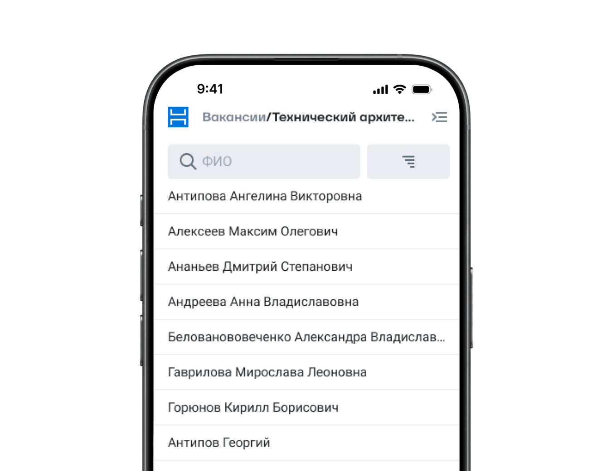
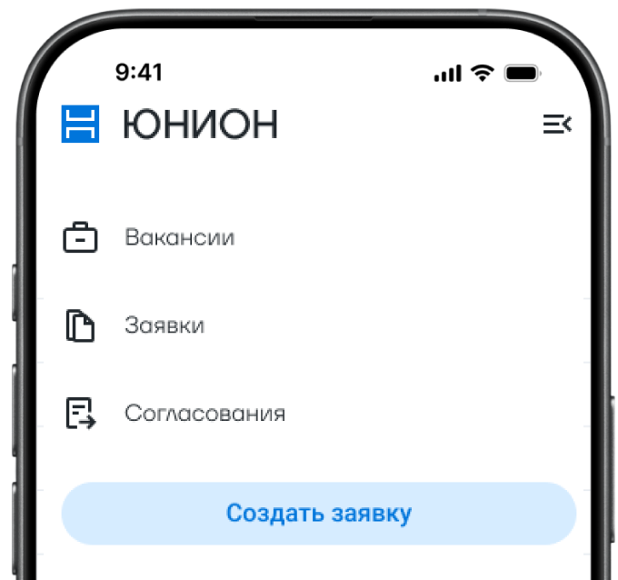
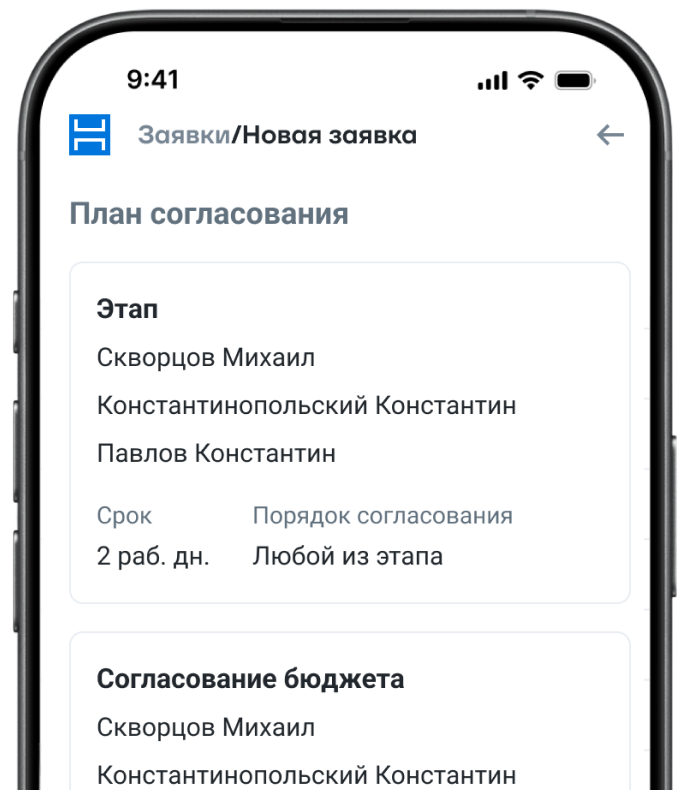